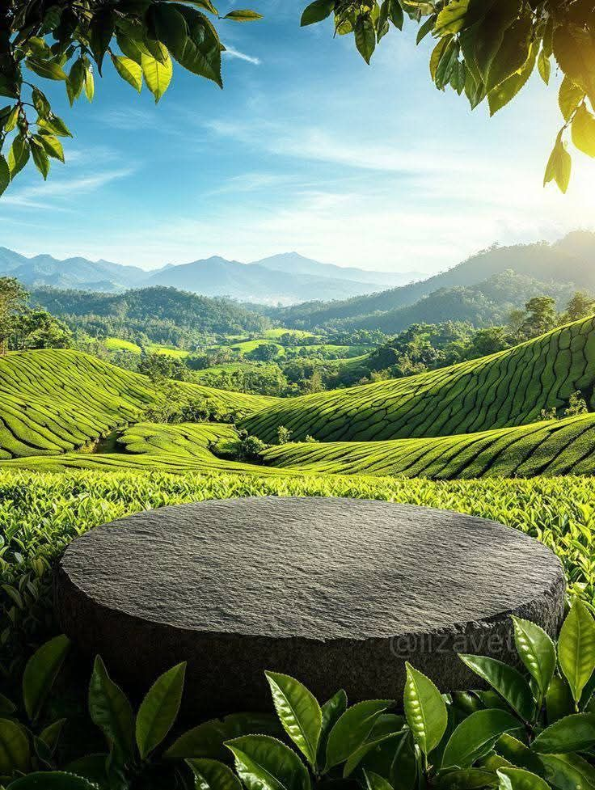

JPG Format Example

About This Image
This photograph shows a beautiful clear, sunny and blue sky that shines light directly on this beautiful green floral space that losing its green as it gets deeper and deeper down. In the middle of all the green is a dark gray stone.
Why PNG Format?
PNG format is better for this image beacause it shows all the details like the leaves and landscape, without losing quality. It shows all of the image without making it blury or squeezed.
Image source: Pinterest